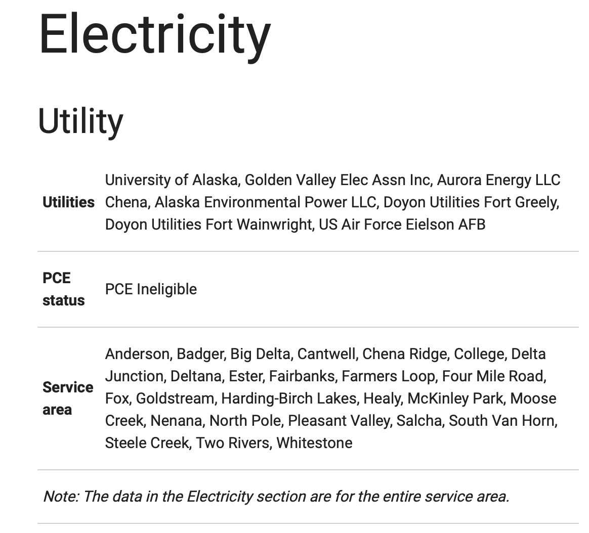

Appendix B — Illustrative Cases in Fairbanks
A question was raised about whether Aurora Energy in Fairbanks should be considered an electric utility or if it is an Independent Power Producer that only sells power to GVEA. The previous version of AEDG displays Fairbanks categorized Aurora as one of many utilities:

Other hints:
- Aurora Energy is regulated by the RCA (CPCN 520), sells power to GVEA, and that RCA documentation of its service area seems to be limited to the immediate area around their plant.
- There is a (possibly vestigial) sign-up for new service that implies to a wider service area.
- GVEA is also regulated by the RCA (CPCN 13) and has a service area that covers Fairbanks and beyond.
So questions arose:
- Is it possible for electrical utilities to compete against each other in Alaska?
- Is Aurora better categorized as an Independent Power Producer (IPP)?
- Are we using the correct words to refer to these entities?
The following information can be attributed to Steve Colt and Mark Foster; their responses from an email exchange in Feb. 2025 have been edited here for clarity. The key to the problem is the development of plants and operators in Fairbanks over time.
B.1 What is Aurora Power?
Aurora is both 1) a certificated utility selling heat in some service territory defined by the network of steam [and hot water] pipes; and 2) an IPP selling electricity to GVEA.
Aurora is a successor entity to the Fairbanks Municipal Utilities System (“FMUS”) that served downtown Fairbanks for decades, like Anchorage ML&P served downtown Anchorage. FMUS also provided district heat through pipes, as steam. Coal fired power plants that generated heat and electricity were common across small campuses around the Northern United States.
B.2 What is GVEA?
The Golden Valley Electric Association is a cooperative whose mission is to “safely provide its member-owners with reliable electric service, quality customer service, and innovative energy solutions at fair and reasonable prices.” GVEA incorporated in 1946, and in about 1997, GVEA acquired the electricity transmission and distribution assets from FMUS and some of its generation assets. GVEA acquired the Frame 5 diesel fired generating units that were stationed adjacent to the FMUS Chena Power Plant from FMUS.
But GVEA did not acquire the big coal plant on the Chena river; instead Aurora Energy somehow came into being as an IPP, acquired this coal plant, and operates it now.
GVEA is the final seller of electricity, or “Load-Serving Entity” (“LSE”), serving all of Fairbanks with some exceptions. GVEA only covers customers who have or pay for electric line extensions to their property/facilities. A number of customers within GVEA’s service territory continue to self-generate electricity in view of the expense of line extension costs. And for historic reasons, UAF and the militry bases generate their own power (see below).
Additional info:
- Henri Dale, retired from GVEA, will have details on GVEA’s acquisitions.
B.3 Are there other relevant entities?
Yes. Fairbanks has more “distributed generation” than other communities in part because of the evolution of the distribution of the power plants at UAF, FMUS, Ft. Wainwright, Eielson and later GVEA chasing diesel, HAGO, and naphtha generation resources at the North Pole refinery associated with TAPS completion in 1977.
Additionally
- Aurora is a a certificated utility selling heat in some service territory defined by the network of steam [and hot water] pipes.
- The Fairbanks Interior Gas Utility is certificated to sell natural gas to some service territory.
- UAF operates its own coal plant that makes electricity and heat
- Doyon Utilities is a generator operating plants on military bases
And GVEA’s role is also convoluted: sometimes selling some electricity to the bases, sometimes buying electricity from UAF, and probably some other weird factors.
B.3.1 Aurora Energy relation to Usibelli Coal?
Aurora Energy is listed as a customer of Usibelli Coal. Their 2011 Financial Statement filed at the RCA says that “The Company has similar ownership as Usibelli Coal Mine, Inc. (UCM), sole supplier of coal to the plant.” The GEM wiki says “It is a private company, owned by Joseph E. Usibelli, Sr., Joseph E. Usibelli, Jr., and Rosalie Whyel.”
In short Usibelli went up the value chain to own/operate the coal fired cogeneration power plant.
B.3.2 A note on technology
For decades, Fairbanks used smaller scale wood and nascent oil/diesel. These were replaced with combined heat-power plants that imported stoker fired traveling grate coal feeds into a boiler technology adapted from the shipping industry that later converted to oil. Fairbanks imported this relatively efficient form of heat-power energy production roughly contemporaneous with WWII and the influx of federal Department of Defense money. The steam distribution systems also provided humidification in the dry winter months. Over the years there has been some effort to replace/complement steam distribution loops with hot water distribution loops.
Additional info:
- The Royal Navy’s conversion to oil is attributed to Winston Churchill.
- Otto Diesel’s first big marketing gig was the 1924 World’s Fair
- Mark Foster’s paternal grandfather came to Alaska in the 1940s following work on hydro projects on the Columbia River in WA and worked on building coal fired power plants with steam heat distribution systems at UAF, FMUS, and Ft. Wainwright.
- See: Davis, T. N., 1984, Energy/Alaska: Fairbanks, AK, University of Alaska Press, 530 p.
B.4 Resolution
Neil McMahon resolved this question by creating an overarching category called “Operator”, of which utilities are one type. The types of operators are:
- Public Electric Utility
- Private Electric Utility
- Electric Co-op
- Subsidiary
- Independent Power Producer
- Military
- Industrial
- Joint Action Agency of the State of Alaska
- Political Subdivision of the State
In this system, Aurora Energy LLC is a Regulated Independent Power Producer, and GVEA is a Regulated Private Electric Utility.